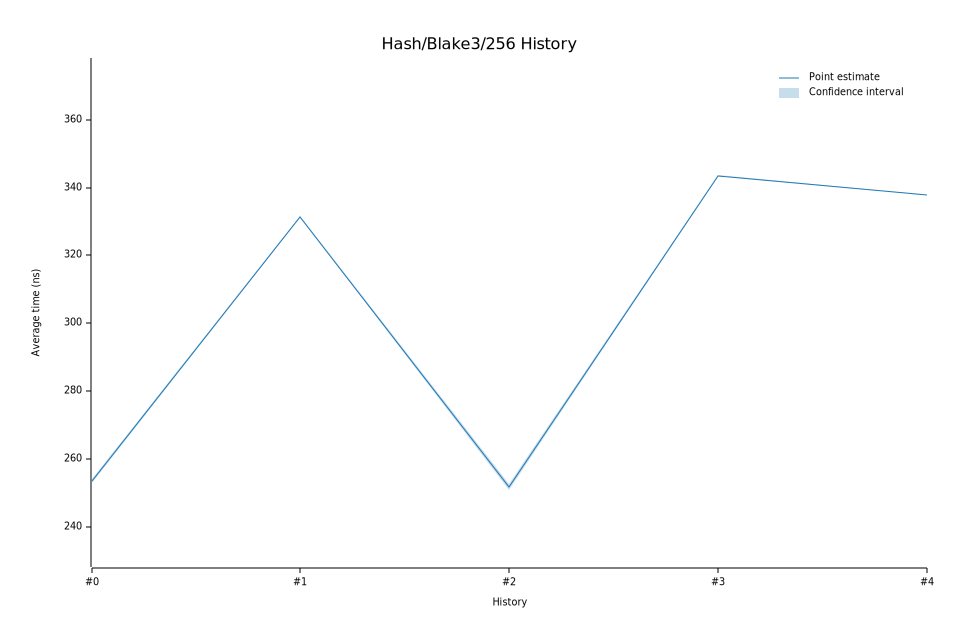

# 42024-02-01T09:24:55Z
|
Lower Bound |
Estimate |
Upper Bound |
| Value: |
337.69ns |
337.78ns |
337.86ns |
| Change in Value: |
-1.7402% |
-1.6951% |
-1.6504% |
No change in performance detected.
# 32024-01-09T10:04:37Z
|
Lower Bound |
Estimate |
Upper Bound |
| Value: |
343.45ns |
343.57ns |
343.71ns |
| Change in Value: |
+36.481% |
+36.908% |
+37.336% |
No change in performance detected.
# 22023-06-01T09:04:26Z
|
Lower Bound |
Estimate |
Upper Bound |
| Value: |
250.81ns |
251.81ns |
252.76ns |
| Change in Value: |
-24.539% |
-24.298% |
-24.060% |
No change in performance detected.
# 12023-04-27T10:48:27Z
|
Lower Bound |
Estimate |
Upper Bound |
| Value: |
331.24ns |
331.43ns |
331.60ns |
| Change in Value: |
+30.799% |
+31.096% |
+31.411% |
No change in performance detected.
# 02023-03-09T11:53:31Z
|
Lower Bound |
Estimate |
Upper Bound |
| Value: |
252.86ns |
253.41ns |
253.96ns |